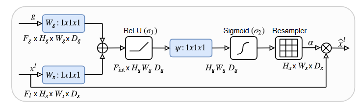
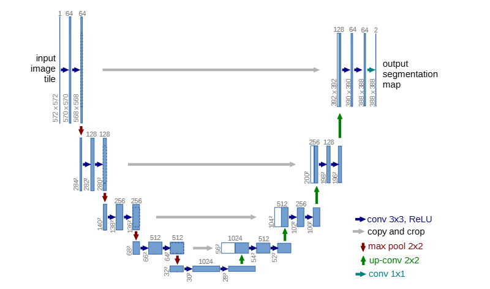
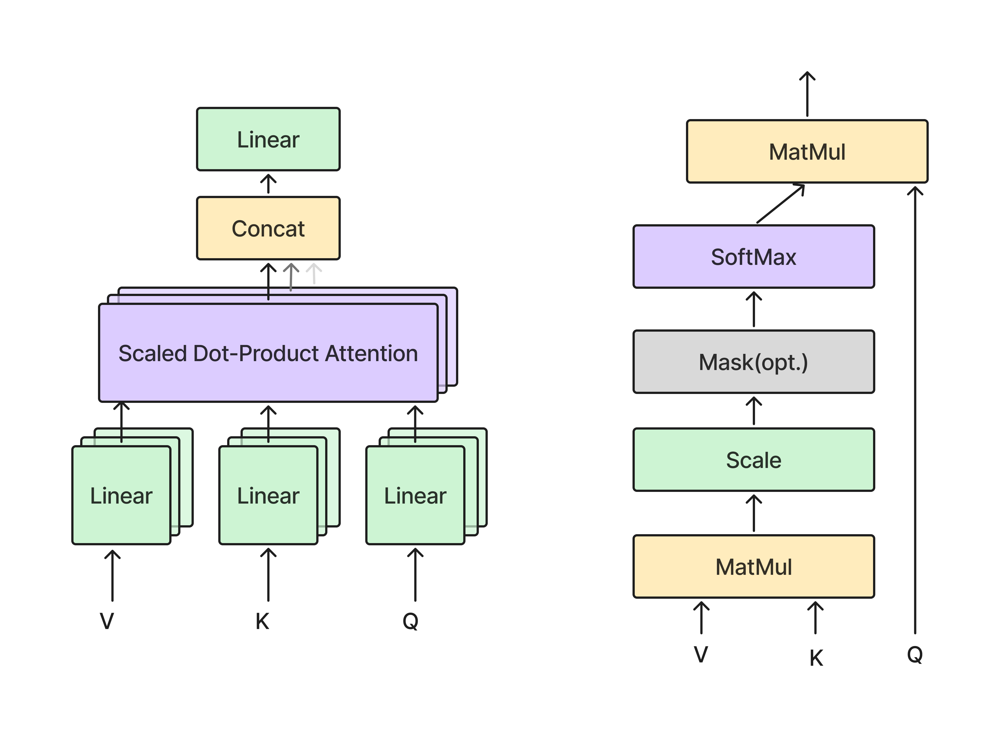

醫學影像 AI 教學區
從模型驗證、評估指標到深度學習架構、遷移學習與資料增強，共 22 堂課，用白話文 + 圖解 + 真的能跑的程式碼，帶你從零開始理解機器學習 / 深度學習在醫學影像上的應用。每堂課都有對應的程式碼資料夾，可以實際訓練、跑出真正的數字，不是只有理論。
⬅ 回研究生生存法則首頁tutorial/lessons/ 底下的資料夾。第一次使用請先設定環境：
cd tutorial conda create -n hibio-tutorial python=3.10 -y conda activate hibio-tutorial pip install -r requirements.txt之後進到任一課的資料夾直接
python xxx_demo.py 就能執行。第一次在 Windows 上裝 GPU 環境（顯示卡驅動、CUDA/cuDNN）的完整說明都在
tutorial/README.md。
模型驗證與評估基礎
第 1-2 課：如何正確地切分資料、評估模型是否真的學到東西
- 為什麼訓練模型不能「用同一份資料考自己」
- Hold-out（切一份資料出來當考卷）怎麼做，train / validation / test 各自的用途
- 為什麼「只切一次」的分數不可靠，看到具體的數字證據
白話版：先想像你在準備考試
如果你複習時把「考古題」和「正式考卷」用同一份題目，那考出滿分一點都不奇怪，因為你根本是在背答案，而不是真的學會了。訓練機器學習模型也是一樣的道理：如果拿同一份資料「又練習又考試」，模型當然會表現得很好看，但那個分數是假的，代表不了它遇到「沒看過的新病人」時到底行不行。
Hold-out 驗證法要做的事情很簡單：把手上的資料切成兩份（或三份），一份給模型「練習」（train），剩下一份藏起來當「正式考卷」（test），模型訓練完全結束後才能打開來看一次分數。如果還需要在訓練過程中「調整參數」（例如要選第幾層、learning rate 多少），通常會再切出第三份 validation，專門拿來調參，讓 test 這份考卷保持絕對乾淨，只用一次。
圖解
詳細說明
常見切法是 train_test_split，例如 80/20 或 70/15/15（train/val/test）。切的時候有兩個常被忽略的細節：
- 要不要 stratify（分層抽樣）？ 如果資料中良性/惡性病人比例是 63%/37%，隨機切分有可能不小心切出一份 test 裡面惡性只佔 10%，這樣算出來的分數會失真。
stratify=y可以強制讓每一份切出來的子集，類別比例都跟原始資料一致。 - Test 只能看一次。 如果你跑了 test、覺得分數不夠好，回頭調整模型再跑一次 test，這已經不是「沒看過的資料」了，你等於是在根據 test 的回饋去調整模型，這份 test 的資訊就「外洩了」，之後報告出來的分數會偏樂觀。這也是為什麼要另外切一份 validation 專門拿來調參。
Hold-out 最大的弱點是「只做一次」：資料量不大時（例如只有幾十到幾百筆），換一個隨機種子重新切一次，測出來的準確率可能就跳動好幾個百分點。本次練習的程式碼會讓你實際用 10 種不同切法各跑一次，看看不同切法之間的變異有多大，這也是為什麼下一課要介紹 K-fold cross-validation。
動手做
cd tutorial/lessons/01-holdout python holdout_demo.py
這支程式會用 10 個不同的隨機種子各切一次 80/20，訓練同一個 Logistic Regression，你會看到 10 次的準確率有高有低，最後印出 mean ± std，讓「hold-out 不穩定」這件事變成看得到的數字。
📝 課後練習
- 執行程式後，把
test_size從 0.2 改成 0.5 再跑一次，觀察 10 次結果的 std 是變大還是變小？想想看為什麼。 - 假設 100 位病人、每人 5 張切片（共 500 張影像），設計一個 hold-out 切分方案，並說明如何避免同一病人的資料同時出現在 train 與 test。
- （進階）把程式中的
LogisticRegression換成sklearn.tree.DecisionTreeClassifier，比較兩個模型對「切分方式」的敏感程度是否不同。
- K-fold 如何解決 hold-out「只切一次」的不穩定問題
- 5-fold 具體在做什麼，一步一步拆解給你看
- Stratified K-fold、Group K-fold 分別解決什麼問題
白話版
上一課提到，只切一次資料，分數可能會因為運氣好壞而跳動。K-fold 的想法很直接：與其只考一次試，不如把資料切成 K 等份，輪流讓每一份都當一次「考卷」，其餘 K-1 份當「練習題」，這樣總共考 K 次、拿到 K 個分數，再取平均。這樣不但每筆資料都被驗證過一次，也能同時看到「這 K 個分數彼此差多少」（標準差），知道模型的表現到底穩不穩定。
5-fold 就是 K=5：資料切成 5 份，每次用其中 4 份（80%）訓練、剩下 1 份（20%）驗證，重複 5 輪，讓每一份都當過一次驗證集。
圖解
詳細說明
- Stratified K-fold：跟第 1 課的 stratify 概念一樣，確保每個 fold 裡的類別比例跟整體一致，分類任務幾乎都應該用這個版本。
- Group K-fold：指定一個「群組」（例如病人 ID），保證同一群組不會同時出現在 train 與 val，這是避免第 7 課 data leakage 的關鍵工具。
- Leave-One-Patient-Out (LOPO)：K 直接設成病人數，每次只留一位病人當驗證，資料極少時（例如罕見疾病只有 20-30 位病人）常用這招把每一位病人的資料都用上。
K 要選多少沒有絕對答案：K 越大，每次訓練用到的資料越多（比較不容易 underfit），但要訓練的次數也越多（更花時間），而且每個 fold 的驗證集越小、分數的變異可能越大；K 越小則相反。5 和 10 是最常見的折衷選擇。
StratifiedGroupKFold（同時控制類別比例、又保證病人不重疊），而不是單純的 KFold。動手做
cd tutorial/lessons/02-kfold-cv python kfold_demo.py
程式會比較 K=2/3/5/10 的結果，並手動展開 5-fold 的每一輪，讓你看到每個 fold 的 train/val 筆數、驗證集中的類別比例、以及最終「平均值 ± 標準差」怎麼算出來的。
📝 課後練習
- 執行程式後比較 K=2 和 K=10 的 std，哪個比較大？這跟每個 fold 的驗證集大小有什麼關係？
- 把程式中手動展開的
StratifiedKFold換成StratifiedGroupKFold，自己造一組假的病人 ID（例如每 3 筆資料視為同一位病人），確保同一病人不會同時出現在 train 與 val（這是為第 7 課暖身的練習）。
分類任務與資料不平衡
第 3-5 課：為什麼 Accuracy 會騙人、Precision / Recall / F1 怎麼選，以及臨床慣用的 Sensitivity / Specificity 與 ROC-AUC / PR-AUC
- Confusion matrix（混淆矩陣）四個格子 TP/TN/FP/FN 到底在算什麼
- 為什麼「準確率很高」不代表模型有用，用真實數字戳破這個迷思
- 什麼樣的資料最容易讓 accuracy 這個指標失效
白話版
假設你要做一個「這張影像有沒有腫瘤」的分類器，每一筆預測結果只有四種可能：
- TP（True Positive，真陽性）：真的有腫瘤，預測也說有 —— 對了
- TN（True Negative，真陰性）：真的沒有腫瘤，預測也說沒有 —— 對了
- FP（False Positive，假陽性）：其實沒有腫瘤，預測卻說有 —— 誤報 / 假警報
- FN（False Negative，假陰性）：其實有腫瘤，預測卻說沒有 —— 漏診，通常代價最高
把這四個數字排成一個 2x2 的表格，就是「混淆矩陣」，Accuracy（準確率）的定義如公式 1，直覺上就是「猜對的比例」，聽起來很合理，但當資料嚴重不平衡時，這個看似合理的指標會給你一個非常誤導的高分。
Accuracy = (TP + TN) / (TP + TN + FP + FN)
圖解
經典失效案例（用真實數字說話）
假設某癌症篩檢資料集中 99% 是陰性、只有 1% 是陽性。做一個「無腦模型」，永遠回答「陰性」，完全不用學任何東西：
- TP = 0（因為它從來不會說「陽性」）
- FN = 所有真正的陽性病例，全部漏診
- Accuracy = 99%
這個模型的 accuracy 高達 99%，聽起來像是「幾乎完美」，但它從頭到尾沒有抓到任何一個真正的病人，臨床上完全沒有用，這就是 accuracy 在不平衡資料下的陷阱：當某一類別佔了絕大多數，模型只要「一律猜多數類別」就能拿到高分。
動手做
cd tutorial/lessons/03-confusion-matrix python confusion_matrix_demo.py
程式會比較「無腦模型（永遠猜不是0）」跟「真正訓練的 Logistic Regression」的 accuracy 與 confusion matrix。
📝 課後練習
- 執行程式後，把資料改成 accuracy 相近但 confusion matrix 完全不同的兩個模型（提示：程式最後印出的兩個 confusion matrix），寫下你觀察到的差異。
- 把程式中的
POSITIVE_RATIO改成 0.3（不那麼不平衡），重新跑一次，比較無腦模型與訓練模型的 accuracy 差距是變大還是變小？ - 除了癌症篩檢，請再舉出一個你熟悉（或查得到）的醫學影像不平衡資料集例子，並估計正負樣本的大致比例。
- Precision 和 Recall 到底在回答什麼問題（它們問的問題不一樣！）
- F1-score 什麼時候該用，什麼時候不該用
- 醫學情境下該優先顧 Precision 還是 Recall，怎麼判斷
白話版
Precision 和 Recall 是從「不同角度」在檢查模型：
- Precision（精確率）問的是：「模型說『有病』的這些人裡面，真的有病的比例是多少？」，也就是模型講話可不可信。Precision 低，代表很多「假警報」，會讓病人做不必要的追加檢查、白白擔心受怕。
- Recall（召回率，也叫 Sensitivity）問的是：「真正有病的人裡面，模型抓到了多少？」，也就是模型有沒有漏網之魚。Recall 低，代表很多真正的病人被模型放過去了（漏診），這在醫療上通常是最不能接受的錯誤。
Precision、Recall、F1-score 的定義分別如公式 2、3、4。
F1-score 是 Precision 與 Recall 的調和平均，用在你需要「兩者都不能太差」的情境；但如果你的任務明顯更在乎其中一個（比如篩檢任務更怕漏診），直接看 Recall 或 Precision 反而比看 F1 更直接。
F-score 是 F1 的延伸，允許你用 β 參數調整「更重視 Precision 還是 Recall」，β > 1 代表更重視 Recall，β < 1 代表更重視 Precision。
Precision = TP / (TP + FP)
Recall = TP / (TP + FN)
F1 = 2 · Precision · Recall / (Precision + Recall)
圖解
該重視哪一個？沒有標準答案，要看「犯錯的代價」
這是這堂課最重要的觀念：precision 和 recall 通常此消彼長（想抓到更多陽性，門檻降低，通常也會多抓一些其實是陰性的進來），所以要先想清楚「哪一種錯誤代價比較高」：
- 篩檢型任務（screening）：目的是「先抓出所有可疑病例，再轉給醫生覆核」，這時候寧可多一些假警報，也不能漏掉真正的病人 —— 優先顧 Recall。
- 確診 / 資源有限的任務（confirmatory）：例如要決定誰要開刀，錯誤的陽性判斷代價很高（不必要的手術風險），這時候會更重視 Precision。
極度不平衡資料下，還建議搭配 PR-AUC（Precision-Recall curve 下面積），會比 ROC-AUC 更誠實反映模型在少數類別上的表現，第 5 課會詳細示範原因。
動手做
cd tutorial/lessons/04-precision-recall-f1 python precision_recall_f1_demo.py
程式比較「無腦模型」「一般 Logistic Regression」「加上 class_weight='balanced' 的 Logistic Regression」三者的 precision/recall/f1，你會實際看到：加了 class_weight='balanced' 後 recall 上升，但 precision 下降 —— 這就是較為「重視 recall」場景中可能要付出的代價。
📝 課後練習
- 試著調整
predict_proba的決策閾值（不用預設的 0.5），畫出 threshold 從 0.1 到 0.9 時 precision / recall 如何此消彼長。 - 情境題：設計一個肺結節篩檢系統（第一線篩檢，篩出可疑病例後轉診覆核），你會優先重視 Precision 還是 Recall？如果換成「手術前最終確診」的系統呢？分別說明理由。
- 把
POSITIVE_RATIO改成 0.3，重新比較三個模型的 precision/recall/f1，不平衡程度改變後，class_weight='balanced'帶來的差異是變大還是變小？
- 醫學文獻慣用的 Sensitivity / Specificity，跟前面學的 Recall/Precision 怎麼對應
- ROC-AUC 是什麼、怎麼畫出來、代表什麼意思
- 為什麼在極度不平衡資料下，ROC-AUC 可能會騙人，PR-AUC 更誠實
白話版
醫學文獻幾乎都用這組術語，其實概念你都學過了，只是換個名字：
- Sensitivity（敏感度） = 第 4 課的 Recall =
TP/(TP+FN)—— 有病的人中，被正確揪出來的比例。 - Specificity（特異度） =
TN/(TN+FP)—— 沒病的人中，被正確排除的比例（Precision 的「陰性版本」概念，但公式不同，要分清楚）。 - False positive rate，FPR（假陽性率）(誤診率) =
FP/(FP+TN)—— 沒病的人中，被錯誤地判斷為有病的比例。 - False negative rate，FNR（假陰性率）(漏診率) =
FN/(FN+TP)—— 有病的人中，被錯誤地判斷為沒病的比例。
模型輸出的通常不是「有病/沒病」這種硬答案，而是一個 0~1 的機率。要把機率轉成答案，需要一個「決策閾值」（預設常是 0.5）。ROC curve 做的事情是：把這個閾值從 0 掃到 1，每個閾值都會得到一組 (Sensitivity, 1-Specificity)，畫成一條線，曲線下的面積就是 ROC-AUC，代表模型整體的鑑別力（1.0 完美，0.5 等於亂猜）。
圖解：ROC 曲線 vs PR 曲線
為什麼 ROC-AUC 在不平衡資料下可能失真
ROC 的 x 軸 FPR 定義如公式 10，分母是「所有真正的陰性樣本」。當陰性樣本數量龐大時（例如篩檢資料中陰性佔 98%），就算 FP 的數量不少，除以龐大的 TN 之後 FPR 還是會很小，於是 ROC 曲線看起來「貼著左上角」、AUC 很漂亮。但 PR curve 的 x 軸是 Recall、y 軸是 Precision，Precision 的分母是「所有被模型判斷為陽性的樣本」，這個數字對「模型到底誤報了多少」非常敏感，因此在極度不平衡資料下，PR-AUC 才是更誠實的指標。
FPR = FP / (FP + TN)
動手做
cd tutorial/lessons/05-sensitivity-specificity-roc python roc_auc_demo.py
程式會算出真實模型的 ROC-AUC (0.997) 和 PR-AUC (0.91)，並用一個「完全隨機亂猜機率」的對照組模型，讓你看到隨機模型的 ROC-AUC 仍有 0.53（還算普通），但 PR-AUC 只有跟陽性比例差不多的 0.02（明顯很差）—— 具體證明 PR-AUC 對少數類別更敏感。
📝 課後練習
- 掃描不同的決策閾值（0.1~0.9），計算每個閾值下的 sensitivity 與 specificity，畫出「sensitivity vs 1-specificity」，確認畫出來的點會落在 ROC curve 上。
- 把
POSITIVE_RATIO改成 0.3（比較不極端），重新比較 ROC-AUC 與 PR-AUC 的差距是否縮小？
醫學影像資料處理
第 6-7 課：醫學影像資料格式與前處理，以及 data leakage 與病人層級切分
- DICOM / NIfTI 是什麼、跟一般的 jpg/png 差在哪裡
- Hounsfield Unit (HU) 是什麼，為什麼 CT 影像需要它
- Windowing（窗寬窗位）怎麼決定「同一張 CT 要顯示成什麼樣子」
白話版
一般照片（jpg/png）每個像素的值就是「亮度」，用 0-255 表示就夠了。但醫學影像不太一樣大多數dicom儲存數值範圍在12-16bits範圍約為0-65536而這些數值內可能具備更多資訊：
- DICOM (.dcm)：臨床上最常見的格式，除了影像本身，裡面還打包了大量 metadata(病人姓名、生日、掃描機型、掃描參數...)全部都在同一個檔案裡。這代表拿到一份 DICOM 檔案時，使用前必須先「去識別化」（anonymize，把病人姓名等隱私資訊清掉），不能直接把原始檔案分享出去做研究。
- NIfTI (.nii / .nii.gz)：研究上常見的 3D 立體格式，常見於 MRI / CT 這種一次掃描很多層切片、疊起來變成一個立體資料的情況（如 BraTS、Medical Segmentation Decathlon 這些公開資料集都用這個格式）。
更關鍵的是：CT 影像的原始數值不是「亮度」，而是 Hounsfield Unit (HU)，代表組織的密度。水大約是 0 HU，空氣大約是 -1000 HU，骨頭通常大於 +400 HU，範圍可以從 -1000 到 +3000 以上，遠超過螢幕能顯示的 256 階灰階。如果直接把這個超大範圍硬壓縮成 0-255，畫面會變得很「平」，看不出細節，因為動態範圍被稀釋掉了。
圖解：Windowing 怎麼運作
Windowing 就是「決定要把哪一段 HU 範圍，拉伸成完整的黑到白」，由 window level（中心值）和 window width（範圍寬度）決定。例如「軟組織窗」level=40, width=400，代表只把 -160 到 240 HU 這段拉伸顯示，範圍外的直接裁掉變成全黑或全白。同一張 CT，換成「骨窗」「肺窗」，看起來會像完全不同的影像 —— 因為每個窗設定專門針對某一種組織的密度範圍做優化。
前處理其他重點
- Normalization：把影像強度做 z-score 或 min-max 標準化，讓不同病人、不同機台掃出來的影像數值範圍一致，穩定模型訓練，但這也同時會傷害原始數值可能具備的訊息，因此若要使用此法應盡可能以較高精確度數值運算(double)。
- Resampling：不同機台的 voxel spacing（每個像素代表實際多少毫米）不同，需要重新取樣到統一解析度，才能公平地拿不同來源的資料一起訓練或比較。
動手做
cd tutorial/lessons/06-medical-image-format python dicom_windowing_demo.py
程式會讀取真實 DICOM metadata、把原始像素值換算成 HU、套用軟組織窗/肺窗/骨窗三種設定並存成對照圖，你會親眼看到同一張 CT 在不同 window 下看起來差異多大。
📝 課後練習
- 觀察：把 width 拉很窄（例如 100）跟拉很寬（例如 2000），對比和可視範圍分別怎麼變？想想為什麼臨床上不同組織要用不同 window。
- 再加一條 slider 控制 gamma，套用
out = 255 * (windowed / 255) **gamma，看看 gamma 對中間灰階的影響。 - 加一個 Button，把目前 slider 的畫面用 fig.savefig 存成 PNG，檔名帶上當下的 level / width，方便之後對照。
- Data leakage（資料洩漏）到底是什麼、為什麼它會讓分數「看起來很棒但其實是假的」
- 三種最常見的洩漏情境，以及正確的處理順序
白話版：這是全部 20 課裡最容易被忽略、但後果最嚴重的錯誤
Data leakage 指的是：test 集裡的資訊，用某種方式「偷偷」影響到了訓練過程，讓模型在 test 上的表現看起來比實際上在「真正沒看過的新資料」上會有的表現還要好。這種錯誤很陰險，因為程式不會報錯、數字看起來還很漂亮，直到真正上線用在新病人身上才會發現「怎麼跟論文寫的差這麼多」。
圖解：最常見的洩漏情境 —— 同一位病人的切片被拆開
三種最常見的洩漏情境
- 同一位病人的多張切片 / 多次追蹤影像，分散在 train 與 test 中。
- 用「全部資料」（包含 test）計算 normalization 的平均值 / 標準差，等於讓 test 的統計資訊悄悄流入訓練過程。
- 先做 data augmentation 再切分 train/test，導致同一張原始影像的增強版本同時出現在兩邊。
傳統機器學習模型
第 8-12 課：從線性模型到樹模型，機器學習的基本工具箱（第 9、11、12 課用同一份 COVID-19 資料集實作回歸）
回歸主線共用資料集：COVID-19 Cases Prediction（Delphi group）
這一章的第 9、11、12 課共用一份真實的 COVID-19 資料集當回歸範例，來自美國 CMU Delphi research group 透過大規模網路問卷（Facebook / COVIDcast survey）蒐集的社群症狀與行為調查，也是台大李宏毅老師 ML2022 Spring 作業 HW01 的指定題目。（第 8 課的分類與第 10 課的分群因為任務性質不同，各自保留更適合示範的資料集。）
- 任務：用某一州「連續 5 天」的問卷指標，預測第 5 天的
tested_positive（該州當天回報的 COVID 陽性率，0～100 的連續值），本質上是一個回歸問題。 - 特徵（共 116 個）：37 個美國州別（one-hot 編碼）＋ 連續 5 天、每天 16 項指標，包含症狀（cli / ili 類流感比例）、社群感染感知（hh_cmnty_cli…）、防疫行為（wearing_mask 戴口罩、restaurant 外出用餐、large_event 大型聚會…）、心理狀態（anxious 焦慮、depressed 憂鬱），以及當天的 tested_positive 陽性率。
- 資料量：訓練集 2699 筆、測試集 1078 筆（測試集不含答案，僅供預測），每一筆代表「某一州的某一天」。
它同時具備連續目標、上百個特徵、特徵之間高度相關這幾個特性，很適合用同一份資料一次示範回歸、特徵篩選、距離模型、樹模型等傳統機器學習工具。
下載：到上面的 GitHub HW01 頁面取得 covid.train.csv、covid.test.csv，放到 tutorial/data/covid/ 即可；沒放的話每支程式都會印出這段下載指引而不會報錯中斷。
- Logistic Regression 怎麼把「一堆數字」變成「0~1 的機率」
- 為什麼這是臨床風險預測最常用的 baseline 模型
- 怎麼把訓練出來的係數解讀成「哪個特徵比較重要」
白話版
雖然名字有「Regression（迴歸）」，Logistic Regression 其實是拿來做「分類」的模型。作法是：先把每個特徵乘上一個權重、加總起來（跟一般線性迴歸一樣的計算，見公式 11），再把這個值丟進一個叫 sigmoid 的函數（公式 12），把任何實數壓縮到 0~1 之間，當作「屬於陽性類別」的機率。
z = w·x + b
σ(z) = 1 / (1 + e⁻ᶻ)
訓練的目標，是找出一組權重 w，讓模型對「真實答案是陽性」的樣本，盡量輸出接近 1 的機率；對「真實答案是陰性」的樣本，盡量輸出接近 0。這個目標函數叫 cross-entropy loss（交叉熵損失）。
圖解：Sigmoid 函數
為什麼它是臨床 baseline 的首選
訓練完成後，每個特徵都對應一個係數；把係數取指數 exp(coef) 就是 odds ratio，代表「這個特徵每增加一單位，得病的勝算（odds）變成幾倍」。這種「每個輸入變數的影響力可以被直接讀出來」的特性，是很多黑盒模型（例如深度神經網路）做不到的，也是為什麼臨床風險預測模型、流行病學研究常常優先選它 —— 就算最後換了更複雜的模型，Logistic Regression 的結果通常還是拿來當作比較基準。
動手做
cd tutorial/lessons/08-logistic-regression python logistic_regression_demo.py
程式訓練完模型後，會把標準化係數與 odds ratio 依影響力排序印出來，讓你看到「哪些腫瘤量測特徵」對良性/惡性判斷影響最大。
📝 課後練習
- 用
model.coef_、model.intercept_印出實際學到的 w 和 b，對照公式σ(w·x+b)自己手算一筆資料的預測機率，跟model.predict_proba的結果比對是否一致。 - 把程式中的
StandardScaler拿掉直接用原始特徵訓練，觀察係數的大小是否還能直接拿來比較特徵重要性？為什麼標準化對「解釋係數」很重要？
- KNN「懶惰學習」的運作原理，它其實完全不用「訓練」
- 為什麼 feature scaling 對 KNN 是必要而非可有可無
- 什麼是「維度詛咒」，它怎麼讓 KNN 在高維度資料上失靈
白話版
KNN 是所有模型裡最直覺的一個：想預測一筆新資料的類別，就去訓練集裡面找「離它最近的 K 個鄰居」，看這 K 個鄰居裡哪個類別最多，就把新資料歸類成那一類。它甚至不需要「訓練」這個步驟，所謂的「模型」其實就是把整份訓練資料原封不動地記起來，等到要預測的時候才現場去比較距離，所以也被稱為「懶惰學習」（lazy learning）。
圖解
兩個一定要注意的陷阱
(1) feature scaling 很關鍵，但不是萬靈丹：KNN 靠「距離」判斷誰是鄰居。如果各特徵的數值範圍差很多（COVID 裡州別是 0/1，問卷指標卻是 0~100），沒有 scaling 時距離幾乎被大範圍的特徵主宰。做完 StandardScaler 後各特徵才會在同一個尺度上被比較——但要注意『同尺度』只有在特徵同樣重要時才是好事：如果多數特徵其實是冗餘或雜訊，把它們全部拉到同等權重反而可能稀釋掉少數真正有用的特徵（動手做會看到這個有趣的反例）。
(2) K 值的 bias-variance trade-off：K 太小（如 K=1）容易被雜訊樣本影響，只要剛好有一個標錯的鄰居就會誤判（high variance）；K 太大則會把太多不相關、離得很遠的樣本也算進來，決策邊界過度平滑，容易忽略局部的細微差異（high bias / underfit）。
(3) 維度詛咒（Curse of Dimensionality）：特徵維度越高，「最近的鄰居」跟「最遠的鄰居」的距離會越來越接近，距離這個概念本身失去鑑別力。這也是為什麼 KNN 不適合直接用在放射組學這種動輒上百個特徵的資料上，通常要先做降維或特徵篩選（見第 11、12 課）。
動手做
cd tutorial/lessons/09-knn python knn_demo.py
程式分別驗證這三個重點：
(1) 比較 scaling 前後的 R²，在這份資料上 scaling 後 R² 反而略降（約 0.86 → 0.78），因為 116 個特徵裡真正有預測力的只有少數「最近幾天陽性率」，naive 地把冗餘特徵也拉到同等權重反而稀釋了訊號（這帶出「scaling 要搭配特徵篩選」的觀念）；
(2) K 值掃描找出最佳 K（約 K=9）；
(3) 一個小型合成實驗，具體算出不同維度下「最近/最遠距離比值」如何趨近於 1。
📝 課後練習
- 執行程式後，對照
scaling_matters()的結果：這份資料 scaling 後 R² 反而略降。用自己的話解釋——什麼情況下 scaling 幫得上忙、什麼情況下反而稀釋了少數真正有用的特徵？ - 在 116 個特徵上直接用 KNN 會遇到「維度詛咒」，可能怎麼緩解?（Hint：先用第 11 課 Random Forest 的 feature importance，或第 12 課的 Lasso 做特徵篩選，只留最重要的幾個特徵再跑 KNN）動手比較篩選前後的 R²。
- K-means 是「非監督式」學習，跟前面幾課有什麼本質上的不同
- 演算法怎麼一步一步找到分群結果
- 怎麼決定 K 值、以及 K-means 有哪些先天限制
白話版
前面學的模型都是「監督式學習」：訓練資料裡有正確答案（標籤），模型的任務是學會怎麼從特徵預測答案。K-means 不一樣，它是「非監督式學習」，完全不需要標籤，只給一堆資料點，讓演算法自己找出「看起來像是同一群」的資料，分成 K 群。
演算法反覆執行兩個步驟，直到穩定不再變動：
- Assignment（分配）：把每個資料點分配給「離它最近的那個群中心（centroid）」。
- Update（更新）：用每一群裡所有點的平均位置，重新計算新的群中心。
圖解
怎麼決定 K？以及先天限制
K-means 需要「事先指定」要分成幾群，常用兩種方法輔助決定：
- Elbow method：畫出不同 K 值下「群內平方距離總和（inertia）」的曲線，找出曲線「彎折像手肘」的那個 K。
- Silhouette score：衡量每個點跟自己所屬群的緊密程度、跟其他群的分離程度，分數越高代表分群品質越好。
K-means 也有明顯的限制：它假設每一群大致呈「球型」、大小相近，對形狀複雜、密度不均的資料效果有限；而且對初始群中心的位置敏感（sklearn 預設用 K-means++ 這種比較聰明的初始化方式改善這個問題），也容易被離群值（outlier）拉偏群中心位置。
動手做
cd tutorial/lessons/10-kmeans python kmeans_demo.py
程式「假裝不知道標籤」，只用像素特徵做分群，再拿真實標籤回頭檢查每個 cluster 的純度，你會看到大部分 cluster 純度很高（>95%），但形狀相似的數字（如 3 跟 8）容易被混在同一群。
📝 課後練習
- 對照程式印出的「每個 cluster 純度」，哪幾個 cluster 純度特別低？猜猜看是哪些數字容易被 K-means 搞混。
- 觀察 elbow method 與 silhouette score 建議的 K，是否跟真實類別數 10 接近？如果不接近，你認為原因是什麼？
- 什麼是「集成學習（ensemble）」，Random Forest 怎麼靠「集體投票」變強
- Bagging 怎麼降低單一模型的 overfitting 傾向
- 怎麼用 feature importance 做特徵篩選
白話版
單獨一棵決策樹（Decision Tree）很容易「背答案」：只要樹夠深，幾乎可以完美記住每一筆訓練資料，但遇到新資料常常表現很差（overfitting）。Random Forest 的解法很直白：與其只信任一棵樹，不如同時訓練很多棵樹（例如 200 棵），每棵樹都：
- 用隨機抽樣、可重複抽取的訓練資料子集去訓練（這個技巧叫 bootstrap）
- 每次要分裂節點時，只從隨機挑選的一部分特徵中找最好的分法（而不是看全部特徵）
這樣訓練出來的每一棵樹都不太一樣、各有各的偏差，最後用「投票」（分類）或「平均」（迴歸）整合所有樹的結果 —— 這整套流程叫 bagging（Bootstrap Aggregating）。個別樹的雜訊誤差在投票平均之後會互相抵銷，讓最終模型比任何一棵單獨的樹都更穩定。
圖解
額外的好處：Feature Importance
訓練過程中，Random Forest 會自動記錄「每個特徵在所有樹的分裂節點中，平均降低了多少不確定性」，統計起來就是 feature importance。這讓 Random Forest 除了拿來預測，也常被用來做特徵篩選：先找出最重要的幾個特徵，再拿去做進一步分析，兼顧準確率與可解釋性。
動手做
cd tutorial/lessons/11-random-forest python random_forest_demo.py
程式用 5-fold CV 的 R²（越接近 1 越好）比較單棵 Decision Tree（約 0.92）、Random Forest（約 0.96）、Linear Regression（約 0.97）：你會看到單棵樹的 R² 最不穩、標準差最大，Random Forest 靠 bagging 明顯更穩定。接著印出 feature importance 排名前 10 的特徵——幾乎被「最近幾天的 tested_positive」佔滿（重要性 >0.97），非常符合直覺：預測明天的陽性率，最有用的線索就是最近幾天的陽性率。
📝 課後練習
- 對照程式印出的 R² 平均與標準差，解釋 bagging 如何幫助降低模型 variance；也可以試著把
DecisionTreeRegressor(max_depth=5)加上深度限制，觀察它的表現是否會比較接近 Random Forest。 - 只取 feature importance 排名前 5 的特徵重新訓練 Random Forest，比較 R² 跟用全部 116 個特徵時差多少？這說明了什麼？
- 「正則化」在解決什麼問題，為什麼線性模型有時會需要它
- L1 (Lasso) 跟 L2 (Ridge) 的效果差異，一個會把係數變 0，一個不會
- 親眼看到「特徵數遠大於樣本數」時 Lasso 帶來的巨大差異
白話版
當特徵數量很多、又彼此高度相關時（例如 COVID 資料的 116 個特徵裡，連續 5 天的同一種指標幾乎一路連動），一般的線性迴歸容易 overfitting、而且係數會變得不穩定：模型有太多幾乎重複的自由度，會在這些相關特徵之間亂分配權重，換到沒看過的資料就不可靠，也很難解讀。正則化的做法，是在損失函數裡加一個「懲罰項」，限制係數不能任意變大，逼模型變得比較保守、比較不容易背答案：
- Ridge (L2)：懲罰項是「係數的平方和」（公式 13），效果是讓所有係數整體「縮小」，但不會真的變成 0 每個特徵多少都還保留一點影響力。
- Lasso (L1)：懲罰項是「係數的絕對值和」（公式 14），數學上的特性會讓一部分不重要特徵的係數直接變成剛好等於 0，等於自動幫你做了特徵篩選（sparse solution）。
Loss = Σ(yᵢ − ŷᵢ)² + α · Σwⱼ²
Loss = Σ(yᵢ − ŷᵢ)² + α · Σ|wⱼ|
圖解
用真實數字感受差異有多大
在 COVID 資料上（2699 筆、116 個特徵）跑三個模型：一般 Linear Regression 與 Ridge 都用滿全部 116 個特徵，val R² 約 0.975；Lasso（L1）則把非零係數壓到只剩 4 個——幾乎只靠「第 4 天的陽性率」加少數幾個欄位，val R² 依然有 0.973，幾乎沒掉。換句話說，116 個特徵裡絕大多數其實是冗餘的，Lasso 幫你自動篩掉，換來一個又準又好解讀的精簡模型。這就是 L1 正則化最實用的價值：自動特徵篩選。
動手做
cd tutorial/lessons/12-ridge-lasso python ridge_lasso_demo.py
📝 課後練習
- 對照程式印出的「非零係數個數」，說明 L1 (Lasso) 與 L2 (Ridge) 在「特徵篩選」這一點的關鍵差異：為什麼 Ridge 幾乎不會把係數壓到剛好 0？
- 調整 Lasso 的
alpha（例如 0.01、0.1、1.0），觀察非零係數個數與 val R² 如何隨 alpha 變化，alpha 太大或太小分別會發生什麼問題？ - 只用 Lasso 篩出來的那幾個特徵重新訓練一個一般 Linear Regression，val R² 掉了多少？這說明 116 個特徵裡有多少其實是冗餘的？
影像分割（Segmentation）
第 13-15 課：背景類別不平衡、Dice / IoU、以及三種分割任務的差異
- 「分割」跟前面幾課的「分類」有什麼不一樣
- 為什麼分割任務中的類別不平衡問題，通常比分類任務更極端
- 幾種常見用來處理這個問題的 loss function 概念
白話版
前面幾課的分類任務，是「一整張圖只給一個答案」（例如：這張片子有沒有腫瘤）。分割（Segmentation）要做的事情更細：不是回答一個答案，而是要幫「每一個像素」都做分類，這個像素是腫瘤還是正常組織？把所有像素的答案拼起來，就會得到一張跟原圖一樣大小的「遮罩（mask）」，用顏色標出病灶的確切輪廓。
問題來了：在一張完整的醫學影像裡，真正的病灶通常只佔一小塊，其他絕大部分都是背景（正常組織、空氣、機台本身）。這代表分割任務的「類別不平衡」問題，往往比分類任務更誇張，可能 99% 以上的像素都屬於背景。
圖解：真實案例（3D-IRCADb-01 肝臟腫瘤 CT 資料集）


資料來源：3D-IRCADb-01（法國 IRCAD 研究中心公開的肝臟腫瘤 CT 資料集）
如果模型完全沒學到東西，結果會長怎樣？
拿最後一張「全黑」遮罩跟 Ground Truth 比較：這個 naive 模型連一個像素的腫瘤都沒找到，但如果只看 pixel accuracy，依然可以拿到很高的分數（公式 5）：
pixel accuracy = (262144 − 200) / 262144 ≈ 99.92%
看起來像是模型「幾乎完美」，但它連一個像素的腫瘤都沒找到。這正是第 3 課「accuracy 陷阱」的分割版本——只是從「整張圖一個答案」變成「每個像素一個答案」，問題被放大了非常多倍。至於這個「準確率很高但沒用」的矛盾，用真正的 Dice / IoU 算出來到底有多嚴重、又該怎麼算，下一課（第 14 課）會用同一個案例算給你看；而且不只算 naive 全黑遮罩，還會實際訓練一個分割模型，讓你親眼看到 accuracy 和 Dice 何時會兜不起來。
常見解法（下一課會繼續深入）
- 換一個不怕不平衡的評估指標：不要只看 pixel accuracy，改看 Dice / IoU（下一課）。
- Class weighting：在 loss function 中給少數類別（病灶）更高的權重，讓模型「不敢」隨便忽略它。
- Dice loss / Soft-IoU loss：直接把「重疊區域的比例」設計成 loss，訓練目標和評估指標一致，天生對不平衡比較不敏感。
- Focal loss：降低「模型已經很有把握、很容易分類」的背景像素對 loss 的貢獻，讓模型把心力放在困難樣本（例如病灶邊界）上。
動手做
cd tutorial/lessons/13-segmentation-imbalance python segmentation_imbalance_demo.py
這支程式會掃過整個 3D-IRCADb-01 資料集、上千張切片，算出真實的腫瘤像素比例，以及「永遠只猜背景」時 pixel accuracy 會有多高。還沒下載、轉換資料集也沒關係，程式會印出清楚的指引而不會報錯中斷。
- Dice 和 IoU 的公式、以及它們之間的數學關係
- 為什麼這兩個指標天生就對「類別不平衡」比較不敏感
- 親手訓練一個真正的 tumor segmentation 模型，比較 accuracy / Dice / IoU 三個指標的差異
白話版
Dice 和 IoU 都是在回答同一個問題：「模型畫出來的範圍，跟醫生標註的正確範圍，重疊得好不好？」想像兩張透明片，一張是模型的預測範圍，一張是正確答案，疊在一起：
- IoU（Intersection over Union，交併比）= 兩者重疊的面積 ÷ 兩者合起來覆蓋的總面積
- Dice Coefficient= 2 × 重疊面積 ÷（兩者面積相加）
IoU 與 Dice 的公式如公式 6、7，數值都介於 0（完全沒重疊）到 1（完全重疊）之間，而且有一個固定的換算關係（公式 8）。因為分子分母都只跟「前景區域」有關，完全不管佔了絕大多數的背景像素預測得對不對，所以不會像 pixel accuracy 一樣被背景灌水。
IoU = |A∩B| / |A∪B|
Dice = 2|A∩B| / (|A| + |B|)
Dice = 2·IoU / (1 + IoU)
圖解
手算範例
Ground truth 面積 16 個像素，Prediction 面積 16 個像素，兩者交集 9 個像素：
Dice = 2×9 / (16+16) = 0.5625IoU = 9 / (16+16−9) = 0.39132×0.3913 / (1+0.3913) = 0.5625 ✔ 與公式 8 換算一致
真正訓練一個 tumor segmentation 模型：在完整資料集上訓練 Attention U-Net
光看公式還不夠，這一課要你實際訓練一個 Attention U-Net，在完整 3D-IRCADb-01（20 位病人）上做 liver + tumor 分割，架構上跟第 17 課的 U-Net 一樣是 encoder-decoder + skip connection，多了一個 Attention Gate：在每一次 skip connection 之前，先讓模型用 decoder 目前的語意訊號，去「加權」encoder 傳過來的細節特徵，等於讓模型自己學會「skip connection 該重點看哪裡」，而不是把 encoder 的全部細節照單全收。
圖解：Attention Gate 架構 （自 Oktay, Ozan, et al. "Attention u-net: Learning where to look for the pancreas." 2018 原始論文圖 2）

訓練程式會在每個 epoch 結束後同時算出 accuracy、Dice、IoU；訓練完成後，再跟「完全不訓練、永遠猜沒有腫瘤」的全黑基準線並排比較。
動手做（第 13、14 課合併練習）
cd tutorial/lessons/14-dice-iou # 1) 下載 3D-IRCADb-01，解壓縮「外層」到 tutorial/data/3Dircadb1/ # （裡面的 PATIENT_DICOM.zip / MASKS_DICOM.zip 等內層 zip 不用手動解） # 2) 把原始 DICOM 轉換成訓練用切片（會自動解開內層 zip）： python prepare_ircadb_dataset.py # 3) 訓練 Attention U-Net，訓練完自動印出 accuracy / Dice / IoU 比較表： python train_attention_unet_ircadb.py
prepare_ircadb_dataset.py 會自動解開 IRCAD 那層層包起來的內層 zip（PATIENT_DICOM.zip、MASKS_DICOM.zip…），再用第 6 課教過的 HU windowing，把原始 DICOM 轉成訓練用的 2D 切片；train_attention_unet_ircadb.py 訓練一個 liver+tumor 雙通道輸出的 Attention U-Net，每個 epoch 都印出 accuracy 和 Dice，訓練結束後自動印出「全黑基準線 vs 訓練好的模型」的 accuracy / Dice / IoU 對照表，並存出訓練曲線圖。這支程式的資料讀取、模型、訓練流程都已經用假資料實際測試過可以正常執行；沒有下載完整資料集的話，執行時會印出清楚的下載指引而不會報錯中斷。
📝 課後練習（第 13、14 課合併）
- 到 3D-IRCADb-01 官網免費註冊、下載完整資料集，依序執行
prepare_ircadb_dataset.py、train_attention_unet_ircadb.py，完成一次真正的 tumor segmentation 訓練。 - accuracy 與 Dice 何時兜不起來 ＋ 指標本身也會騙人：對照程式最後印出的「全黑基準線 vs Attention U-Net」表格——全黑基準線的 tumor accuracy 高達 0.99、Dice 卻是 0.0，為什麼 accuracy 會這麼高？進階：本課的 Dice 是用「整個驗證集一起累加」（dataset-level）算的；如果改成「每張切片各算一次 Dice 再平均」，全黑基準線的 tumor Dice 會從 0 跳到約 0.6。想想為什麼？（提示：一張「沒有腫瘤」的切片，全黑預測的 Dice 是
0/0，該算成 0 還是 1？）這說明連「指標的聚合方式」都可能製造假象。 - 為什麼 tumor 遠比 liver 難？你會看到 liver Dice 爬到約 0.87，tumor Dice 卻卡在約 0.1 上不去。已知 tumor 只占約 0.29% 的像素、比 liver 稀有約 17 倍，且四分之一的腫瘤不到 100 個像素。用「類別不平衡 + 小物件」解釋為什麼 tumor 這麼難，以及為什麼「幾乎全猜背景」在 tumor 上仍能拿到 0.99 accuracy。（提示：驗證集的腫瘤其實偏大、也沒被 128px 縮沒，所以主因是模型沒學好 tumor，而不是解析度把它弄丟。）
- 從 loss 把 tumor 拉上去：
DiceBCELoss裡tumor_loss乘了 2.0、liver 沒有，為什麼？把這個權重拿掉重訓，你預期 tumor Dice 變好還是變差？進階：查一下 Tversky / Focal-Tversky loss，說明它為什麼比 Dice+BCE 更適合小病灶（提示：它讓「漏抓 FN」的懲罰大於「誤報 FP」）。 - 從推論／訓練設定把 tumor 拉上去：目前預測用
model(x) > 0.3。tumor 的機率普遍偏低，試著只把 tumor 的閾值降到 0.15~0.2（liver 維持 0.3）重新評估，tumor Dice 有沒有回升？這對應到 precision／recall 的什麼取捨？再試著把EPOCHS調到 40~60、或IMAGE_SIZE調回 256，比較哪個改動對 tumor Dice 影響最大、能不能往參考結果的 0.87 靠近。 - 打開
train_attention_unet_ircadb.py的AttentionGate類別，對照上面的圖解，找出w_g、w_x、psi分別對應圖中的哪一個步驟。
- 三種分割任務的輸出格式差異，用同一張圖直接比較
- 什麼情境該選哪一種（細胞計數 vs 器官輪廓）
白話版：三種分割在回答不同的問題
- 語意分割 (Semantic Segmentation)：只回答「這個像素屬於哪一類」，不管「是哪一個」。畫面中如果有兩顆分開的腫瘤，語意分割會把它們都標成同一個顏色的「腫瘤」類別，變成一整片，沒辦法告訴你「這裡其實是兩顆」。代表架構：U-Net、DeepLab。
- 實例分割 (Instance Segmentation)：除了分類別，還要區分「這是第幾個個體」，每一個物件都有自己獨立的遮罩，就算兩顆腫瘤緊貼在一起也能分開算面積。代表架構：Mask R-CNN。
- 全景分割 (Panoptic Segmentation)：把上面兩種合在一起：對背景這種「數不清、沒有個體概念」的類別（稱為 stuff，例如組織背景）用語意分割的方式處理；對「數得出來、每個都是獨立個體」的類別（稱為 things，例如每一顆細胞）用實例分割的方式處理，一張圖同時給出兩種資訊。
圖解
動手做
cd tutorial/lessons/15-segmentation-types python segmentation_types_demo.py
程式會產生 semantic / instance / panoptic 三種標註方式並存成對照圖，你會看到語意分割把相鄰的兩顆細胞融合成一團，而實例分割仍能正確分開。想練習真實資料，可參考程式最下方關於 Kaggle「2018 Data Science Bowl」細胞核分割資料集的說明。
📝 課後練習
- 在程式的
CELLS中再加入一顆跟第 5 顆完全重疊的細胞，觀察「後畫的蓋掉先畫的」這個簡化假設會造成什麼問題？實務上（如 Mask R-CNN）是怎麼處理重疊物件的？ - 血球細胞計數任務（需要數出視野中每顆白血球並個別量測大小）應該使用哪一種分割方法？為什麼語意分割不夠用？
深度學習基礎
第 16-18 課：MLP、CNN / U-Net、以及處理序列資料的 LSTM / GRU
- 神經網路最基本的組成單位：一層一層的「全連接層」在做什麼
- 為什麼一定要有非線性 activation function，少了它會發生什麼事
- Dropout 怎麼幫助模型不要「背答案」
白話版
MLP（多層感知器）是最基本的神經網路：把輸入的每個數字，跟一堆可學習的權重相乘、加總，變成下一層的輸入，重複好幾層，最後輸出預測結果。每一層做完加權加總之後，還會經過一個 activation function（如 ReLU），把結果「扭曲」成非線性的形式。
這個非線性是關鍵中的關鍵：如果拿掉所有 activation function，整個網路無論疊幾層，數學上把每一層的線性變換連續乘起來，結果還是等於「一個」線性變換——多層的表達能力完全沒有被用到，模型本質上退化成跟一層的線性分類器差不多。有了非線性，模型才能學會「彎曲」決策邊界，處理複雜的樣態。
圖解
用實驗結果驗證這兩個重點
右邊的程式會實際做兩組對照實驗：(1) 「有 ReLU」vs「全部換成 Identity（等於純線性模型）」——Iris 幾乎線性可分，所以純線性模型也有不錯的成績，加了非線性通常更穩、在複雜資料上差距會更明顯；(2) 「有 Dropout」vs「沒有 Dropout」的過擬合程度。第二組實驗會刻意只用很少（24 筆）訓練資料、把網路加寬、訓練很久，讓你看到train accuracy 和 test accuracy 之間的差距——這個差距就是「過擬合程度」的具體量化指標：沒有 dropout 時 train accuracy 衝到 100% 但 test accuracy 只有 80%（差距 20%）；加上 dropout 後 test accuracy 反而升到約 84%，差距縮小到 15% 左右。Dropout 訓練時隨機關閉一部分神經元，逼模型不能過度依賴任何單一路徑，效果類似「隨機找幾位不同的同學一起讀書」，比只靠自己死背更不容易讀偏。
動手做
cd tutorial/lessons/16-mlp python mlp_demo.py
load_iris，免下載）——150 筆、4 個花萼/花瓣特徵、3 個品種；PyTorch 訓練，若有 GPU 會自動使用📝 課後練習
- 結合程式的實驗結果，用自己的話解釋「全部換成 Identity」為什麼會退化成線性模型。Iris 幾乎線性可分所以差距不大，試著換成
load_digits或make_moons這類較難、非線性的資料，差距會更明顯。 - 把程式中
small_n從 24 調大到 120（訓練資料變多），重新比較有無 dropout 的差異是否縮小？這跟「資料量越多、越不容易 overfit」的觀念是否一致？
- 卷積（convolution）跟全連接層本質上有什麼不同
- 「權重共享」為什麼能讓 CNN 用更少參數學到更好的特徵
- U-Net 的 encoder-decoder + skip connection 架構，以及為什麼它是醫學影像分割的標配
白話版：CNN 為什麼特別適合影像
MLP 把整張圖攤平成一長串數字，每個像素都要接一個獨立的權重，完全沒有用到「影像中相鄰像素通常有關聯」這個先驗知識。CNN 改用一個小小的「卷積核（kernel，例如 3x3）」在整張圖上滑動，每滑到一個位置就做一次局部的加權運算，關鍵是：同一個卷積核的權重，在整張圖的每個位置都是共用的。這帶來兩個好處：(1) 參數量大幅減少（不用每個像素都配一組獨立權重）；(2) 對「平移」有一定程度的不變性，一個學會辨認邊緣的卷積核，不管邊緣出現在圖的哪個角落都認得出來。搭配 pooling（例如 max pooling）進一步降低空間解析度、增加對小幅位移的容忍度。
圖解：U-Net 架構 （自 Ronneberger et al., 2015 原始論文圖 1）

為什麼醫學影像分割特別愛用 U-Net
Encoder 一路降維，會抓到「這是什麼東西」的語意資訊，但同時也丟失了精細的空間位置細節；Decoder 把解析度還原回來，但單靠 bottleneck 的資訊很難精準畫出病灶邊界。U-Net 的 skip connection 把 encoder 每一層降維前的「高解析度細節」直接接到 decoder 對應的層，等於同時給 decoder「這是什麼」跟「精確在哪裡」兩種資訊。這對分割任務的邊界精確度（直接反映在 Dice/IoU 上）非常關鍵，而且 U-Net 相對輕量、在資料量不大的情況下依然可以訓練出不錯的效果，非常適合醫學影像資料量普遍有限的現實。
動手做
cd tutorial/lessons/17-cnn-unet python cnn_mnist_demo.py # CNN vs MLP 分類比較 python unet_demo.py # 真的訓練一個 U-Net 做分割
tutorial/data/Retina blood/）訓練一個真正的 U-Net 做血管分割unet_demo.py 會先算出一個「陽春綠色通道閾值基準線」當對照，再訓練 U-Net 並比較兩者的 Dice/IoU（U-Net 約 0.71 / 0.55，陽春閾值僅約 0.24 / 0.14）。血管又細又多分支，單靠「哪裡比較暗」的規則很難分乾淨，你會清楚看到真正訓練出來的 U-Net 大幅勝過陽春方法，並存出實際的血管分割結果對照圖。
📝 課後練習
- 結合
cnn_mnist_demo.py印出的參數量，說明 CNN 的權重共享如何用更少（或相近）的參數量拿到比 MLP 更高的準確率。 - 在
unet_demo.py中把 skip connection（torch.cat([...])那幾行）拿掉，改成不 concat，重新訓練，比較 Dice/IoU 是否下降？血管這種細結構特別依賴 skip connection 傳回來的高解析度細節。 - 把
unet_demo.py的IMG_SIZE從 128 調到 256，血管細節變清楚後 Dice/IoU 是否提升？訓練時間又增加多少？（解析度與計算成本的取捨。）
- 為什麼要有「處理序列資料」專用的神經網路架構
- LSTM 的 gate 機制怎麼解決「記不住太久以前的事」這個問題
- GRU 跟 LSTM 的差異，以及該怎麼選
白話版
心電圖、時間序列生理訊號、逐字的病歷報告，這些資料有「順序」的概念——現在這個時間點的意義，往往跟前面發生了什麼有關。RNN（循環神經網路）的設計就是為了處理這種資料：每處理一個時間步，除了看這一步的輸入，還會參考「上一步」留下來的隱藏狀態，一步一步把資訊往後傳遞。
問題是：原始 RNN 在處理長序列時，早期步驟的資訊經過一連串的乘法運算後，往往會消失或爆炸（梯度消失/爆炸），導致模型「忘記」很久以前發生的事，很難學到長期依賴關係。
圖解
LSTM vs GRU
LSTM引入獨立的 cell state（可以想成一條專門搬運「長期記憶」的傳送帶）加上三個閘門：forget gate（決定要丟掉多少舊記憶）、input gate（決定要吸收多少新資訊）、output gate（決定要輸出多少當作這一步的結果）。這些閘門都是可學習的，讓模型自己決定「這個時間點該記住什麼、該忘記什麼」，比原始 RNN 更能保留長期資訊。
GRU是 LSTM 的簡化版，把三個閘門簡化成兩個（reset gate、update gate），也不再有獨立的 cell state。參數更少，訓練通常更快，在很多任務上效能跟 LSTM 相差無幾，因此在資料量有限或需要快速迭代實驗時，GRU 常是優先考慮的選項。
動手做
cd tutorial/lessons/18-lstm-gru python lstm_gru_demo.py
tutorial/data/SP500/）。任務：拿某檔股票（預設 AAPL）過去 60 個交易日的收盤價，預測下一天的收盤價——RNN 最典型的時間序列應用程式會在同一個預測任務上比較 LSTM 與 GRU 的預測誤差（RMSE / MAE / MAPE）、參數量、訓練耗時，你會看到 GRU 參數量明顯較少（12,929 vs 17,217）、訓練也較快，而預測誤差常常跟 LSTM 相差無幾。（股價預測本身雜訊極大，重點不是「準到能拿去交易」，而是用真實序列把 LSTM/GRU 的行為差異講清楚。）
📝 課後練習
- 到 PyTorch 官方文件查
nn.LSTM的公式，找出 forget gate 對應的項，說明它為什麼有助於解決長期依賴問題。 - 把程式中的
HIDDEN_SIZE從 64 降到 16，重新比較 LSTM/GRU 的參數量與準確率差距是否隨著模型變小而縮小或放大？
Attention 機制與 Transformer 家族
第 19-20 課：Attention、Transformer、ViT，以及模型選擇與可解釋性的總結
- Attention 在解決 RNN 的什麼痛點
- Query / Key / Value 這三個名詞到底各自在做什麼
- 為什麼 Transformer 需要額外加上 positional encoding
白話版
上一課的 RNN/LSTM 必須「一步一步」循序處理序列，第 100 個時間步要看到第 1 個時間步的資訊，中間要經過 99 次傳遞，資訊很容易衰減，而且無法平行運算（一定要等前一步算完才能算下一步）。Attention 機制換了一個做法：讓序列中的每一個位置，可以「直接」跟其他所有位置互動、決定要關注誰、關注多少，不用一步步傳遞，天生就能平行運算。
具體怎麼算？把每個位置的向量，透過三組不同的線性轉換，變成三種角色：
- Query（我想問什麼）：代表「這個位置正在找什麼樣的資訊」。
- Key（我有什麼）：代表「每個位置本身能提供什麼樣的資訊」，用來跟 Query 做比對。
- Value（實際內容）：代表「如果決定要關注這個位置，實際要拿走的內容是什麼」。
算法：把 Query 跟每個位置的 Key 做內積，數值越大代表「越相關」，再經過 softmax 把這些相關程度變成一組加總為 1 的權重，最後用這組權重對所有位置的 Value 做加權平均，就是這個位置的 attention 輸出（公式 15）。這整個過程如果 Query/Key/Value 都來自「同一個序列自己」，就叫 self-attention；如果同時用多組不同的 Query/Key/Value 投影（讓模型同時關注不同種類的關係），就叫 multi-head attention。
Attention(Q, K, V) = softmax(QKᵀ / √d) · V
圖解：attention 機制 （ Vaswani, Ashish, et al."Attention is all you need" 2017 改自論文圖 2）

Transformer：疊起來、加上位置資訊
Transformer 就是把 self-attention 層跟一般的 feed-forward 層交替疊起來（通常搭配殘差連接 residual connection 與 LayerNorm 讓深層網路更容易訓練），組成 encoder（或 encoder+decoder）。有個細節不能漏：attention 的計算方式本身完全不管「順序」——把輸入序列打亂重排，attention 算出來的東西在數學上是等價的（跟 RNN 不一樣，RNN 是天生就按順序一步步處理）。所以 Transformer 必須額外把「這是第幾個位置」的資訊，用 positional encoding（可以是固定的三角函數公式，也可以是可學習的參數）加進輸入裡，模型才有辦法知道順序。
補充：現在的 CNN 也常常把 attention 概念加進來
Attention 並不是 Transformer 的專利。近幾年很多 CNN 架構會在卷積層之間插入輕量的 attention 模組，讓網路自己學會「這一層的特徵裡，哪些通道、哪些空間位置比較重要」，再據此重新加權——常見的例子有 SE（Squeeze-and-Excitation，通道注意力）、CBAM（同時做通道 + 空間注意力），以及醫學影像分割裡的 Attention U-Net（在每個 skip connection 之前，用一個 attention gate 篩選 encoder 要接回來的細節，而不是照單全收）。也有乾脆把兩者結合的 CNN + Transformer 混合架構（例如 TransUNet）：用 CNN 抓局部紋理、用 attention 補足全域關聯。所以與其說「CNN vs attention」，現在實務上更常見的是「用 attention 補強 CNN」——這也是為什麼下一課的 ViT 把 attention 推到極致之後，CNN 依然沒有退場。
動手做
cd tutorial/lessons/19-attention-transformer python attention_transformer_demo.py
程式自己手刻一個明確拆出 Q/K/V 的 self-attention（不呼叫 PyTorch 內建的黑盒模組），訓練完後會把某張測試圖片的 attention 權重矩陣畫出來 —— 你會看到模型明顯把注意力集中在數字筆畫所在的那幾列，而不是空白背景，這是一個很直觀的「模型在關注什麼」的證據。
📝 課後練習
- 對照
SimpleSelfAttention的程式碼，用自己的話解釋 Query、Key、Value 分別對應哪一行、扮演什麼角色。 - 把程式中的
self.pos_embedding拿掉（不加位置編碼），重新訓練，觀察準確率是否下降？為什麼 attention 機制本身「不知道」輸入的順序？
- ViT 怎麼把「一張圖」變成 Transformer 看得懂的「一串 token」
- 為什麼 ViT 在資料量小的時候常常打不過 CNN，親自跑出這個結果
- Grad-CAM 怎麼讓 CNN 的判斷「被看見」，這對醫學應用為什麼重要
白話版：把圖片切成拼圖，當成一串 token
Transformer 本來是為了處理「一串 token」設計的（例如一串文字）。ViT 的做法，是把一張影像切成固定大小的小方塊（patch，例如 4x4 或 16x16），每個 patch 攤平之後，透過一個線性層投影成一個向量（token），整張圖就變成了一串 patch token，前面再加上一個可學習的 [CLS] token（專門用來聚合整張圖的資訊、最後拿去做分類），加上位置編碼後，直接餵進標準的 Transformer encoder，最後用 [CLS] token 的輸出接一個分類頭。
圖解
ViT vs CNN：歸納偏見（Inductive Bias）的取捨
CNN 的卷積 + pooling 天生內建了「局部性」與「平移不變性」的假設，等於在架構裡就先幫模型「暗示」了一些關於影像的先驗知識。ViT 幾乎沒有這種先天假設，patch 之間一開始要靠 attention 自己「重新學」哪些位置有關聯 —— 這代表 ViT 通常需要更大量的資料或大規模預訓練（例如在 ImageNet-21k 這種千萬級圖片上先練過）才能追上甚至超越 CNN。在醫學影像這種資料量普遍有限的場景，直接從頭訓練 ViT 效果常常打不過 CNN，實務上更常見的做法是用預訓練好的 ViT 做遷移學習，或採用 CNN + Transformer 的混合架構。
ViT 參數量更大 → 資料需求更大 → 醫學影像多半靠微調而非從頭訓練
承上：ViT 少了 CNN 的先天假設，得靠「更大的模型 + 更多的資料」把該學的空間關係自己補回來，因此參數量往往比同級的 CNN 大上不少，對訓練資料量的胃口也跟著水漲船高。這件事在自然語言處理是可行的——大語言模型（LLM）幾乎都是 Transformer 家族，靠網路上的海量文字把規模堆起來，也因此成為目前的主流。但醫學影像的處境幾乎相反：標註資料常常只有幾百到幾千張，還牽涉病人隱私與昂貴的專家標註，想「從頭」訓練一個大 ViT 幾乎不可能，硬 train 通常會嚴重過擬合。所以實務上的標準做法是：拿一個在超大規模資料上預訓練好的模型，再用參數高效微調（PEFT, Parameter-Efficient Fine-Tuning）去適應醫學任務——其中最常見的就是 LoRA（Low-Rank Adaptation）：把原本龐大的權重整個凍結，只額外插入一組很小的「低秩」矩陣去學「這個醫學任務跟原任務的差異」，需要更新的參數可能不到原模型的 1%，既省記憶體、又大幅降低對資料量的需求。這也正是下一課（第 21 課）遷移學習之所以在醫學影像領域格外重要的原因。
可解釋性：Grad-CAM，讓 CNN 的判斷「被看見」
模型準確率再高，如果醫生不知道它「為什麼」這樣判斷，臨床上很難被信任。Grad-CAM 是常見的解法：拿最後一層卷積的特徵圖，計算它對「預測分數」的梯度，把每個 channel 的梯度做全域平均池化當作這個 channel 的重要性權重，加權加總所有 channel 的特徵圖，就得到一張跟原圖等大的熱力圖，標出「模型主要在看哪裡」。如果模型的判斷依據落在合理的病灶區域，熱力圖能增加醫生對模型的信任；如果熱力圖亮在不相關的背景或機台標記上，就代表模型可能學到了「捷徑」而不是真正的病理特徵——這正是這整個教學區想傳達的核心精神：模型的選擇要在效能、資料量與可解釋性之間取得平衡，尤其在醫學影像領域，「準確」與「可信」同樣重要。
動手做
cd tutorial/lessons/20-vit-gradcam python vit_cifar_demo.py # CNN vs 從頭訓練的 ViT，比較準確率 python gradcam_demo.py # 訓練 CNN 並畫出 Grad-CAM 熱力圖
vit_cifar_demo.py 用 CIFAR-10（10 類小型彩色圖片，資料量足夠、適合凸顯 ViT 的「資料飢渴」）；gradcam_demo.py 改用 COVID-19 Chest X-ray（放在 tutorial/data/Covid19-classification/），大張又清楚，Grad-CAM 熱力圖更貼近臨床上真正在乎的可解釋性問題vit_cifar_demo.py 在有限的訓練資料與訓練時間下比較 SmallCNN 與 TinyViT；gradcam_demo.py 訓練一個小型 CNN 做胸部 X 光三分類（Covid / Normal / Viral Pneumonia），再把 Grad-CAM 熱力圖疊在原始 X 光上——你會看到模型對 Covid / 肺炎的判斷理想上應該亮在肺部區域；若亮在影像邊角的標記、肩膀骨架或機台文字上，就代表模型學到了「捷徑」而非真正的病理特徵，這正是 Grad-CAM 在醫學影像上不可或缺的原因。
📝 課後練習
- 把
vit_cifar_demo.py中的train_subset從 8000 調大到 40000，重新比較 CNN 與 ViT 的差距是否縮小？這驗證了「資料量越大，ViT 的劣勢越不明顯」這個論點。 - 為什麼 ViT 需要
pos_embed，而 CNN 不需要類似的東西？（提示：回顧第 19 課 attention 為什麼需要位置編碼） - 在
gradcam_demo.py中找一張模型「預測錯誤」的測試 X 光（例如把 Viral Pneumonia 判成 Covid），畫出它的 Grad-CAM，觀察模型是不是看錯地方了（亮在肺部以外的區域）。 - 把
gradcam_demo.py的 Grad-CAM 目標層從conv3改成conv2（更淺、解析度更高的 64×64 特徵圖），熱力圖定位變更細還是更粗？這說明了「深層語意 vs 淺層定位」的取捨。
遷移學習與醫學影像資料增強
第 21-22 課：站在巨人肩膀上的 pretrain / freeze / fine-tune，以及醫學影像專屬的資料增強技巧
- 為什麼「站在巨人肩膀上」比從頭訓練更適合資料量有限的情境
- Pretrain（預訓練）、Freeze（凍結）、Fine-tune（微調）三種做法分別在程式碼上怎麼實作
- 誠實面對：ImageNet 預訓練搬到醫學影像上，效果沒有想像中無痛，但依然值得做
白話版
訓練一個像 ResNet、ViT 這種規模的模型，通常需要幾十萬甚至上百萬張標註影像才能學得夠好，但醫學影像資料集常常只有幾百到幾千張。遷移學習的想法是：與其每次都從一張白紙（隨機初始化）開始學，不如先借用一個已經在超大型自然影像資料集 ImageNet（約 128 萬張圖、1000 個類別）上訓練好的模型，它的權重已經學會辨認邊緣、紋理、形狀這些各種影像任務都可能用得上的通用視覺特徵，再把這份「已經懂一些東西的模型」拿來，針對你手上的任務做調整。
具體有三種常見做法：
- From scratch（從頭訓練）：完全隨機初始化，沒有借用任何預訓練知識，資料不夠多時很容易 underfit 或 overfit。
- Freeze（凍結 / linear probing）：載入預訓練權重後，把整個 backbone「凍結」（
requires_grad=False，訓練時完全不更新），只在最後換上一個新的分類頭，只訓練這個新的小小分類頭。優點是需要更新的參數量非常少、訓練快、不容易 overfit；缺點是如果新任務跟原本 ImageNet 的視覺特徵差異很大，凍住的特徵可能不夠好用。 - Fine-tune（微調）：一樣用預訓練權重當初始值，但不凍結，讓全部（或後面幾層）參數都能繼續更新，通常搭配比從頭訓練更小的 learning rate，讓模型在保留大部分原有知識的前提下，緩慢地把特徵「調整」成更適合新任務的樣子。
圖解
誠實面對：搬到醫學影像上沒有想像中無痛
這裡要老實提醒一個常被忽略的重點：ImageNet 是貓、狗、車子、傢俱這類日常「自然影像」，跟醫學影像（灰階 CT/X 光、超音波、病理切片染色影像）在色彩分布、紋理統計、對比機制上差異非常大，ImageNet 學到的「這是貓耳朵」「這是輪胎」這類高階語意特徵，對「這是不是腫瘤」這種判斷幾乎派不上用場。有研究（如 Raghu et al., 2019《Transfusion: Understanding Transfer Learning for Medical Imaging》）發現，在不少醫學影像任務上，ImageNet 預訓練帶來的好處主要來自「更好的權重初始值、讓訓練收斂更快更穩定」，而不是模型真的「看得懂」病灶的高階語意。
但這不代表遷移學習沒用 —— 即使無法「無痛」轉移，經驗上與大量文獻都顯示：在醫學影像資料量有限的情境下，用 ImageNet 預訓練權重當初始值，通常還是比從頭訓練收斂更快、更穩定、最終效果也常常更好，尤其是模型的前幾層（學到的是邊緣、紋理這類非常通用的低階視覺特徵）遷移效果普遍不錯。實務上的建議：把它當作一個「幾乎總是值得先試試看」的預設選項，但不要預期它是萬靈丹，仍然要用你自己的驗證集實際比較看看。
動手做
cd tutorial/lessons/21-transfer-learning python transfer_learning_demo.py
models.ResNet18_Weights.IMAGENET1K_V1，自動下載約 45MB）程式只用 800 張訓練圖（模擬資料有限的情境），比較 from-scratch／freeze／fine-tune 三種做法的準確率、可訓練參數量與訓練耗時。程式開頭與結尾都會提醒：這裡用 CIFAR-10（一樣是自然影像）示範，遷移效果會比真正搬到醫學影像時樂觀，這是刻意保留的重要但書。
📝 課後練習
- 把程式中的
train_subset從 800 調大到 5000，重新比較三種做法的差距是否縮小？這說明了「資料量越大，pretrain 帶來的優勢越不明顯」。 - 試著實作「漸進解凍」：先用
build_frozen_model訓練幾個 epoch，再把model.layer4的requires_grad打開，用更小的 learning rate 繼續訓練，比較跟純 freeze / 純 fine-tune 的差異。 - 為什麼 fine-tune 通常要用比 from-scratch 更小的 learning rate？如果用一樣大的 learning rate 做 fine-tune 可能會發生什麼問題？
- 醫學影像常用的幾種 augmentation 技巧，親眼看到套用前後的差異
- 哪些一般電腦視覺常用的增強手法，套用在醫學影像上反而危險
- 用實驗量化 augmentation 對「資料量有限時」泛化能力的實際幫助
白話版
Data augmentation（資料增強）是用同一批影像「生出更多變化版本」，讓模型看到更多樣的資料、比較不容易死背。但醫學影像不能照搬一般電腦視覺的增強套路（隨便轉 90 度、隨便左右翻轉、大幅度形變），因為那樣可能會產生解剖學上根本不存在、甚至互相矛盾的影像，等於在教模型學習錯誤的知識。這堂課具體示範幾種在醫學影像上「常用而且相對安全」的技巧，也點出哪些手法需要特別小心。
圖解：常用技巧一覽
逐項說明
- 小角度旋轉：模擬病人擺位、掃描角度的些微差異，角度通常限制在 ±10~15° 內，跟一般電腦視覺任意旋轉 90°/180° 完全不同。
- 亮度 / 對比擾動（Gamma 校正）：模擬不同機台、不同曝光條件下影像對比的差異，讓模型不要對特定的亮度分布過度敏感。
- 高斯雜訊：模擬感測器雜訊或低劑量掃描（為了降低病人輻射劑量）時常見的雜訊增加。
- 彈性形變 (Elastic Deformation)：模擬軟組織的些微變形，是分割任務中最經典也最有效的增強之一（U-Net 原始論文就是靠這招大幅改善小樣本下的分割效果），但強度不能太大，否則會把病灶形狀扭曲到不合理的程度。
- 隨機遮蓋 (Random Erasing / Cutout)：隨機遮住一小塊區域，模擬影像中的偽影或部分遮擋，逼模型不要只靠影像中某一小塊局部線索做判斷，要看整體脈絡。
- ⚠ 水平翻轉：對於解剖上左右不對稱的部位（例如胸腔中心臟通常偏左），隨意水平翻轉可能產生現實中不存在的解剖結構；即使是看起來對稱的部位，套用前也該先確認任務是否受影響。
動手做
cd tutorial/lessons/22-data-augmentation-medical python augmentation_demo.py
tutorial/data/Covid19-classification/）。(A) 在一張真實 Covid X 光上示範各種增強的視覺效果 (B) 訓練圖只有約 250 張，量化 augmentation 對泛化的實際幫助Part A 會把原圖、小角度旋轉、Gamma 校正、高斯雜訊、彈性形變、隨機遮蓋、水平翻轉全部畫在同一張胸部 X 光上直接比較——特別看「水平翻轉」那張：右上角的「D」方位標記和文字都跟著鏡射反了，等於製造出一張解剖方位錯誤的影像，這正是為什麼胸部 X 光不能隨意左右翻轉。Part B 用這個只有約 250 張的小資料集，分別訓練「有無 augmentation（安全增強：小角度旋轉 + 亮度擾動 + 輕微雜訊，刻意不含水平翻轉）」的三分類 CNN，你會看到有 augmentation 的版本 test accuracy 從約 77% 提升到約 82%、train/test 差距也縮小 —— 資料量越有限，這個幫助通常越明顯。
📝 課後練習
- 把
small_rotation的角度從 10 改成 90，觀察對這張胸部 X 光來說，這個角度還合理嗎？為什麼醫學影像通常只能用「小角度」旋轉？ - 把
unsafe_horizontal_flip（水平翻轉）加進safe_augment()，重新跑 Part B，test accuracy 有沒有變差？結合「心臟偏左」的解剖事實想想為什麼這個增強不安全。 - 針對「胸部 X 光三分類」任務，從 Part A 展示的 6 種增強中選出你認為合適的 3 種、不合適的 1 種，並說明理由。